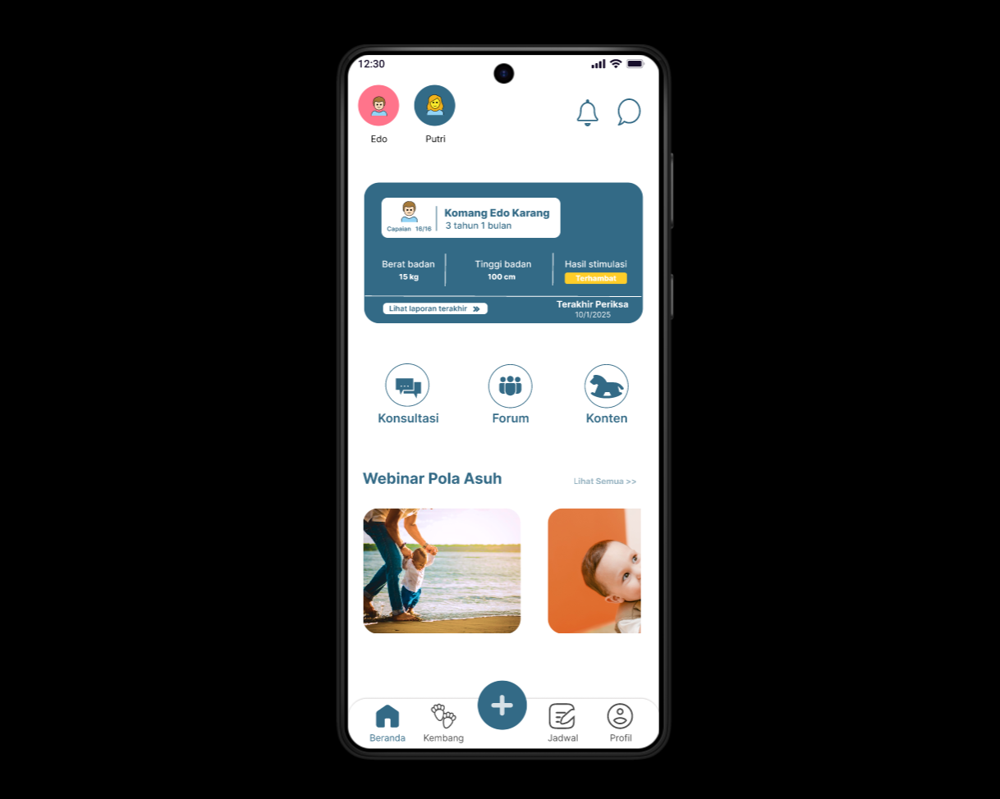

Health Application Design
(Child Growth and Development)
Project Description
This app is designed to help parents monitor their children's growth and development comprehensively and easily. The main focus is to provide an intuitive interface and features that support monitoring of health, nutrition, immunization schedules, and child development milestones. The design is made as attractive as possible so that users feel comfortable and motivated to use the app regularly.
See Design in FigmaTypography
| Role | Example | Weight |
|---|---|---|
| Heading (Hero) | Heading | 700 |
| Heading (Section) | Heading | 700 |
| Body Text | Paragraph... | 400 |
| Button / Links | Button Text | 600 |
Color Palette
Primary Accent
#2bd6ec
Dark Headings
#1A2E3A
Body Text
#48545C
Light Background
#f0f4f7
Application Screenshot



Development Team

I Made Dwipa Aditya Putra
UI/UX Designer

Komang Lazuardi Edo Karang
UI/UX Designer
Ni Luh Putu Shinta Juliantari
UX Researcher